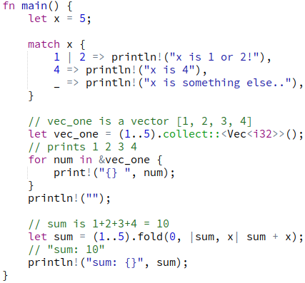
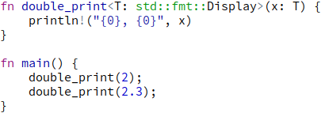
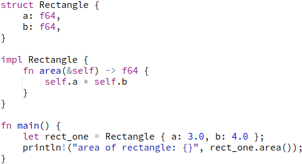
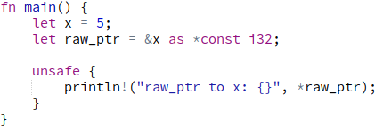

Rust
Rust jest systemowym językiem programowania. Jego największymi zaletami są szybkość, zapobieganie problemom z pamięcią oraz gwarancja bezpieczeństwa wątków w programowaniu wielowątkowym. Bez wątpienia istotna jest także aktywna, rozwijająca się społeczność.

Zastosowania
Z racji bycia systemowym językiem programowania, wachlarz zastosowań Rusta w dużej mierze pokrywa się z zastosowaniami języka C. Jest najlepiej przystosowany do pisania takich rzeczy jak np. jądra systemów operacjyjnych czy też oprogramowanie wymagające dużej wydajności i kontroli nad pamięcią, jak chociażby silniki przeglądarek internetowych, implementacje protokołu HTTP, a nawet silniki gier komputerowych.
Cechy
Rust jest językiem niskopoziomowym, więc w przeciwieństwie do chociażby Javy lub C# nie ma garbage collector. Tak samo jak w C, do alokacji pamięci jest używany zarówno stack jak i heap, w zależności od potrzeb programisty. Dealokacja pamięci z heap przebiega przy użyciu destruktorów, podobnie jak w C++. Do tego Rust oferuje nam pewność całkowitego bezpieczeństwa w kwestii zarządzania pamięcią programu.
Przewaga nad C
Przede wszystkim, każdy programista C wie jaki problem stwarzają niezainicjalizowane wskaźniki, jak uciążliwe może być wywoływanie free() dla każdej ręcznie alokowanej zmiennej, zwłaszcza kiedy dochodzi do sytuacji z "double free". W przypadku programowania wielowątkowego, kiedy nasz program robi się "duży", data races stają się istnym koszmarem. System bezpieczeństwa Rusta gwarantuje że żaden wskaźnik nie może pozostać bez inicjalizacji a data races nie mogą wystąpić. Dealokacja pamięci nie jest zadaniem programisty, więc żadna pamięć nie będzie zwolniona dwukrotnie.
Gwarancja bezpieczeństwa
Największą zaletą Rusta jest to, że sprawdzanie bezpieczeństwa programu przebiega już w czasie kompilacji. Oznacza to że program, który przez przypadek nie będzie całkowicie bezpieczny nie będzie możliwy do skompilowania, ale także że nie wpłynie to w żaden sposób na wydajność naszego gotowego programu. W ten sposób Rust zachowuje taką samą prędkość jak C.
Generic types
Używając C, aby napisać funkcję czy strukturę danych która działałaby niezależnie od typu danych, konieczne jest użycie void pointers, castowanie, przy czym cały proces jest uciążliwy i mało intuicyjny. Rust pozwala na definiowanie generic functions lub types z taką łatwością jak chociażby C#, przy czym abstrakcje istnieją tylko w czasie kompilacji więc w żaden sposób nie spowalnia to naszego programu.

Object Oriented Programming
Rust nie ma pojęcia "klasy", w tej roli używane są struktury. Struktura wygląda praktycznie tak samo jak w języku C, z tym że możliwe jest definiowanie na niej metod, co sprawia że struktura działa bardzo podobnie do klasy w C++ (oczywiście nie identycznie). Język zachowuje balans między całkowitą orientacją obiektową Javy a proceduralnością C.

Omijanie bezpieczeństwa
System bezpieczeństwa z założenia nie pozwoli na skompilowanie kodu który może być niebezpieczny. Jednak czasami zdarzają się sytuacje w których programista jest w stanie zagwarantować że dany fragment kodu jest bezpieczny, nawet jeśli kompilator nie może tego sprawdzić. Pojawia się to chociażby w przypadku "raw pointers", czyli wskaźników takich jak te używane przez C. Stworzenie i np. przekazywanie takiego wskaźnika zawsze jest bezpieczne, natomiast dereferencing już nie. Powodowane jest to tym, że taki wskaźnik może nie być zainicjalizowany. Programista może wiedzieć że w tym punkcie ten wskaźnik zawsze wskazuje prawidłowy fragment pamięci, jednak kompilator nie może uznać takiego kodu za "bezpieczny". Dlatego też Rust pozwala "ominąć" system bezpieczeństwa umieszczając taki kod w bloku unsafe { }. Blok unsafe nie pozwala na "wszystko", ale w sytuacjach takich jak ta opisana powyżej jest bardzo użyteczny.

Użyteczne strony internetowe
Odnośniki do stron związanych z Rustem: